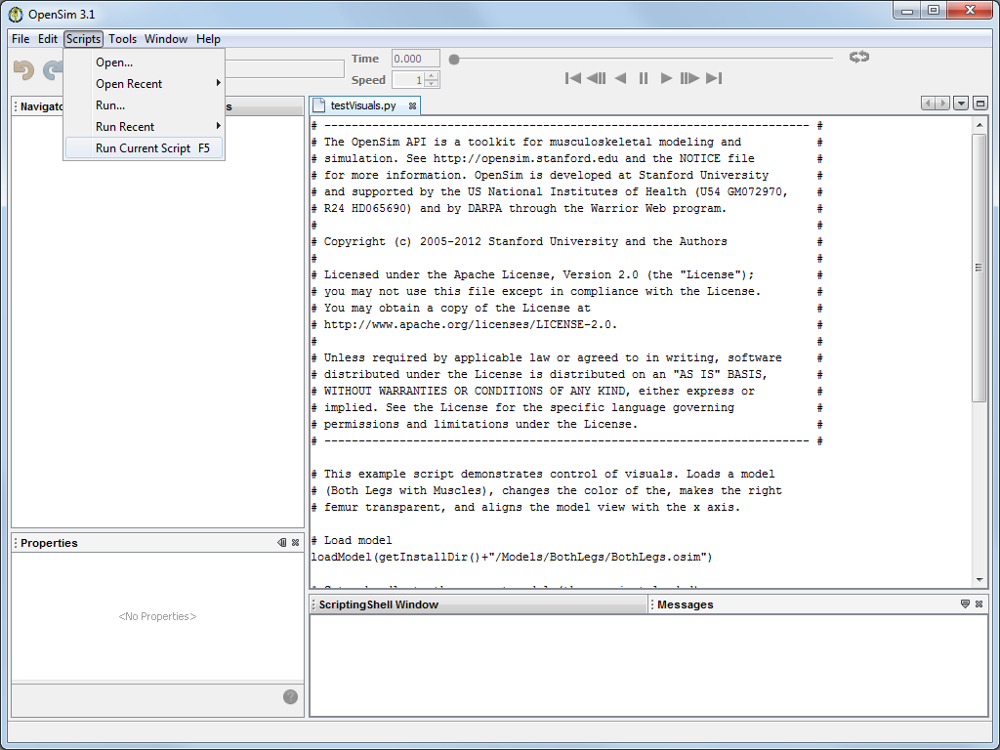
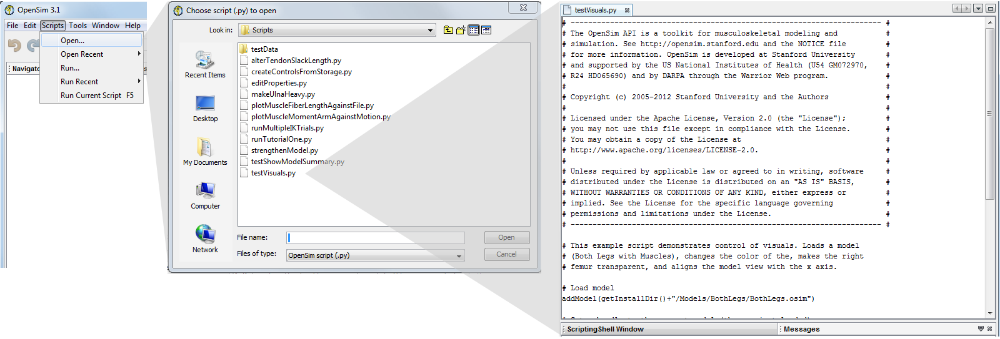
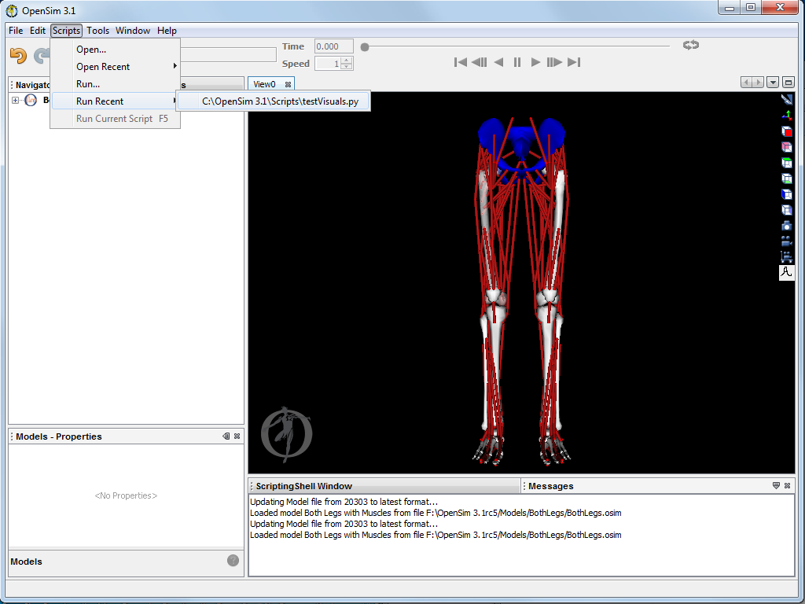

As of version 3.0, OpenSim comes with a built in scripting shell that allows user access to the OpenSim API for loading, editing, and building models, running tools, plotting results, and more. The syntax for the scripting shell in the GUI is Python.
Whats Available
 |
|
|---|
Limitations
Some internal SimTK classes (that belong to the SimTK namespace and Simbody internal functionality) are not available for construction, but the most commonly used classes are available as of version 3.1 (SimTK::Vec3, Vector, Mat33, State, Inertia)
Getting Started

 |
|
|---|
Tips and Tricks
- You can change the location of the Scripts directory by going to Edit > Preferences and changing the directory under the "ScriptsPath" option (see User Preferences for more information).
- Directories are relative to the OpenSim installation Directory (e.g. Specifying "MyScripts" will look for scripts in the folder C:\ProgramFiles\OpenSim3.0\MyScripts if you installed OpenSim in the folder C:\ProgramFiles\OpenSim3.0).
- Note that you have to restart OpenSim for the change to take place.
- After loading a script, variables defined in the script are available for future reference
- A panel to echo commands and files executed in the scripting shell is available (the "Command History"). You can clear the command history by right clicking in the window and selecting "Clear".
- If there are errors in running a script from file, you can view the corresponding error messages by clicking on the red error icon in the bottom right of the OpenSim screen, and then selecting "Show Details"
- In the GUI scripting shell, code executed as part of for loops or if statements is controlled by indentation, rather than braces as in C++ or the for/end convention in Matlab. Otherwise, at the ScriptingShell command prompt, you must enter one line at a time.
Available Example Scripts
| Script Name | Description |
|---|---|
| runTutorialOne.py | This example script performs the steps performed in Tutorial 1 - Intro to Musculoskeletal Modeling |
| runTutorialTwo.py | This example script performs the steps performed in Tutorial 2 - Simulation and Analysis of a Tendon Transfer Surgery |
| runTutorialThree.py | This example script performs the steps performed in Tutorial 3 - Scaling, Inverse Kinematics, and Inverse Dynamics |
| testVisuals.py | Demonstrates control of visuals. Loads a model (Both Legs with Muscles), changes the color of the pelvis, makes the right femur transparent, and aligns the model view with the x axis. |
| testShowModelSummary.py | Displays information about a the current model in a standalone dialog |
| plotMuscleFiberLengthAgainstFile.py | Shows how to create and display a plot window. The script loads the BothLegs OpenSim model adds curves of fiber length for the model. Then, it loads and plots data from a storage file, which contains fiber lengths for the model Subject01_simbody that is included with the OpenSim distribution |
| plotMuscleMomentArmAgainstMotion.py | Shows how to plot muscle moment arms as a function of a motion. |
| makeUlnaHeavy.py | Shows how to create a modified version of a model that is loaded in the GUI. The Arm26 model must be loaded and current in the GUI to run this script. The script increases the mass of the ulna. The modified model is then loaded in the GUI. |
| alterTendonSlackLength.py | Shows how to change the attributes of the muscles for the current model (tendonSlackLength in this example). |
runMultipleIKTrials.py | Runs multiple inverse kinematics trials. To see the results load the model and ik output in the GUI. |
| strengthenModel.py | Increases the maxIsometricForce of all the muscles in the currently loaded model. A pop-up dialog displays a confirmation with the name of the new model. |
| editProperties.py | Script to demonstrate how to edit model component properties. |
| createControlsFromStorage.py | Helper function to create a controls.xml file from a .sto file. |
{kind=link}
{kind=link}
{kind=link}